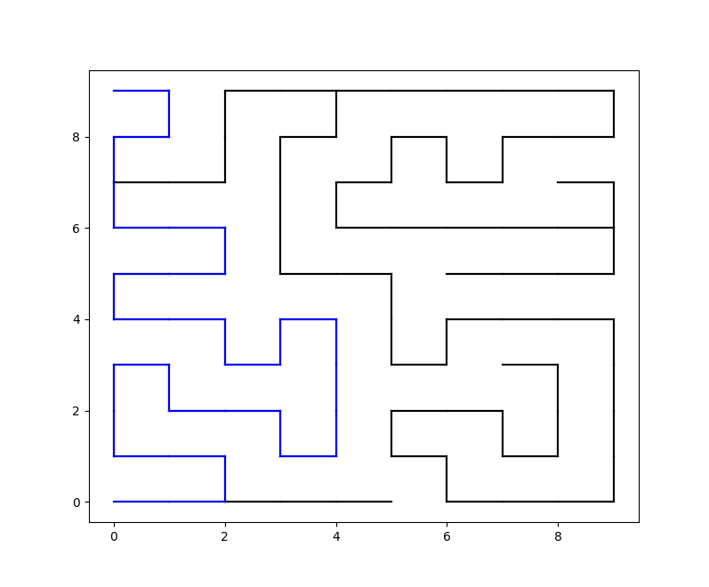
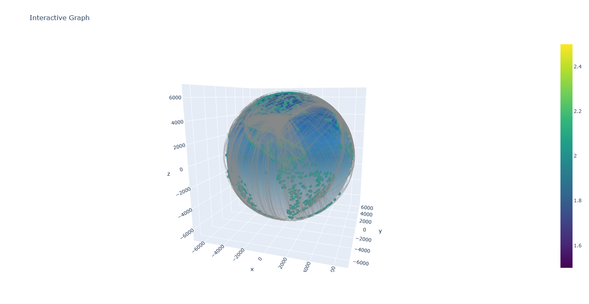

Multi Modal Router
The Multi Modal Router is a graph-based routing engine that allows you to build and query any hub-based network. It supports multiple transport modes like driving, flying, or shipping, and lets you optimize routes by distance, time, or custom metrics. It can be expanded to any n-dimensional space making it versatile in any coordinate space
NOTE: This project is a work in progress and features might be added and or changed
In depth Documentation
command line interface documentation
code example can be found in docs/examples/
Features
Building Freedom / Unlimited Usecases
The graph can be build from any data aslong as the required fields are present (example). Whether your data contains real world places or you are working in a more abstract spaces with special coordinates and distance metrics the graph will behave the same (with minor limitations due to dynamic distance calculation, but not a problem when distances are already precomputed. solutions).
Example Usecases
-
real world flight router
-
social relation ship graph
- uses user data like a social network where users are connected through others via a group of other users
- builds a graph with
usersas Hubs - connects users based on know interactions or any other connection meric
findsusers that are likely toshare;interests,friends,a social circle, etc.
-
coordinate based game AI and pathfinding
- uses a predefined path network (e.g. a simple maze)
buildsthe garph representation of the networkfindsthe shortest way to get from any pointAto any other pointBin the network- you can checkout a simple example implementation for a maze pathfinder here

graph visualizations
Use the build-in visualization tool to plot any 2D or 3D Graph.

Important considerations for your usecase
Depending on your usecase and datasets some features may not be usable see solutions below
potential problems based on use case
Please check your data for the following
| distance present | coordinate format | unusable features | special considerations |
|---|---|---|---|
| YES | degrees | None | None |
| YES | not degrees | runtime distance calculations | set drivingEnabled = False or do this |
| NO | degrees | None | distances must be calculated when preprocessing |
| NO | not degrees | ALL | You can't build the graph with neither distances or supported coordinates! SOLUTION |